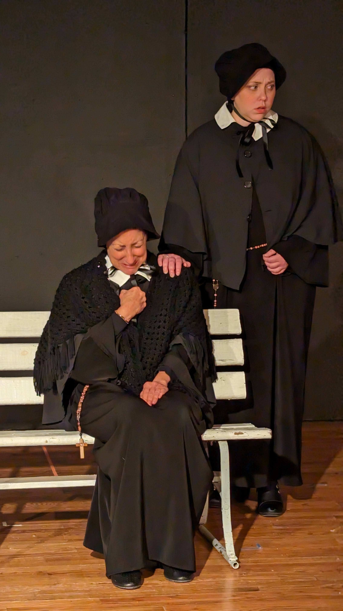
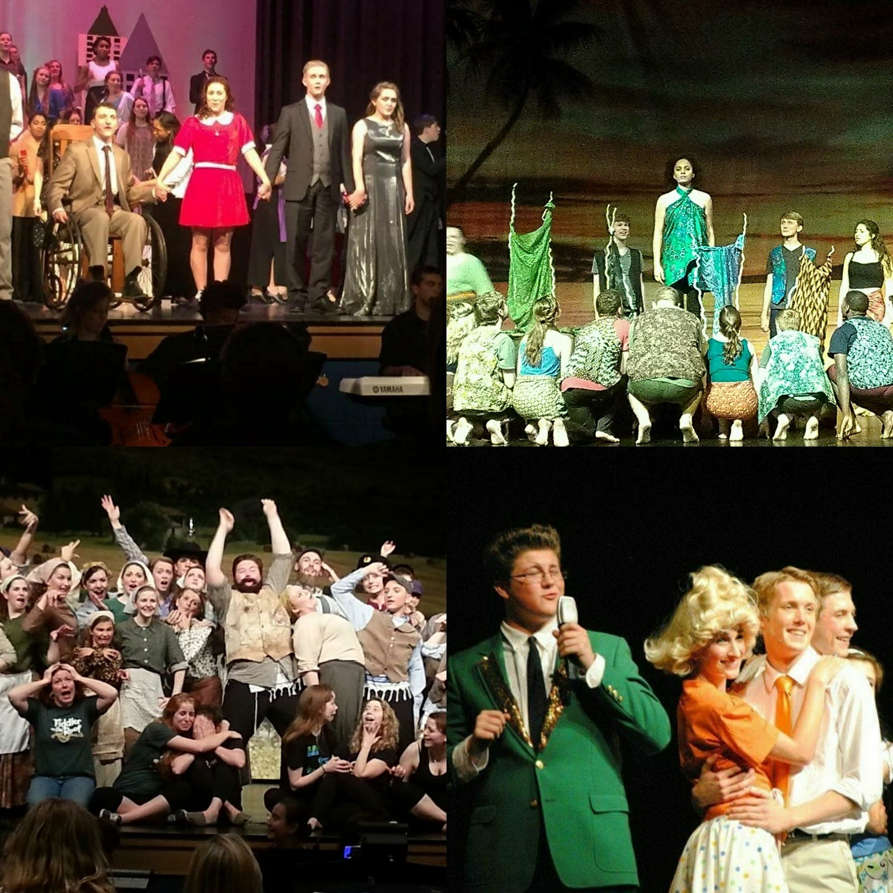
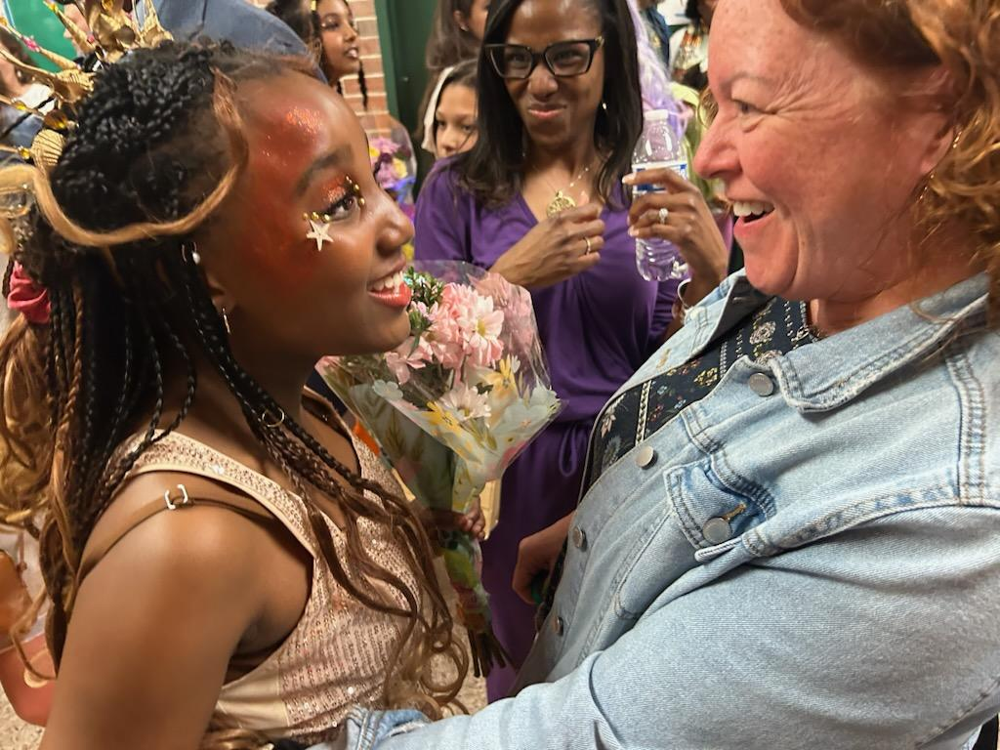

Performance Coach | Yoga Instructor | Director | Theatre Artist & Educator
With over 25 years of experience in theatre education and artistic direction, I am dedicated to nurturing creativity, building confidence, and helping students and performers discover their authentic voice on stage and in life.
I am a passionate theatre arts educator, director, and certified yoga instructor with a career spanning more than two decades. My journey in the performing arts has taken me from university stages to middle and high school classrooms, and into the vibrant Northern Virginia theatre community.
My mission is to create transformative experiences through the performing arts. Whether I'm directing a production, coaching an aspiring actor for college auditions, or leading a yoga class to help performers connect with their bodies, I believe in the power of authentic expression and collaborative creativity.
I hold a Master of Arts in English from Western Illinois University and a Bachelor of Arts in English from the University of Maryland. I trained at prestigious institutions including the Atlantic Acting School in NYC and as a Juilliard Directing Fellow in 2012, where I was one of only 15 secondary educators chosen nationwide.
As a certified yoga instructor (RYT 200, CYT 200), I integrate mindfulness and body awareness into my teaching practice, helping actors develop the physical presence and emotional depth that conservatory programs cultivate.
My students have been accepted into top theatre programs including Carnegie Mellon, NYU Tisch School of the Arts, Juilliard, Columbia, and many others. I take pride in not just preparing students for college, but in helping them discover their passion and unique artistic voice.
I offer personalized instruction and coaching across four key areas, each designed to help you grow as an artist and performer. My approach values collaboration above all else, creating a supportive environment where creativity can flourish.
I believe in creating a safe, creative space where actors can take risks, explore characters deeply, and discover new and genuine moments. Whether working on classic texts or new devised work, I guide ensembles through a process that honors both the script and the unique gifts each performer brings to the production.
Recent Directing Work:
With over 25 years of experience teaching theatre arts at middle school, high school, and adult education levels, I offer comprehensive instruction in all aspects of theatre. My teaching philosophy centers on creating an inviting, supportive classroom where students feel safe to explore their own talents, connect collectively with any material, and challenged to succeed at things they thought impossible.
Teaching Areas:
I specialize in one-on-one coaching for monologue performance and college audition preparation. My students have been accepted into the nation's top theatre programs including Carnegie Mellon, NYU Tisch, Juilliard, Columbia, and many more. Together, we'll work on finding material that showcases your unique strengths, developing authentic character choices, and building confidence for auditions.
Coaching Services Include:
As a certified yoga instructor (RYT 200, CYT 200), I offer specialized yoga classes designed for performers and actors. Drawing from practices used in top conservatory programs, these sessions help develop body awareness, presence, breath control, and the physical flexibility essential for grounded stagecraft. Yoga for performers strengthens the mind-body connection that allows actors to access deeper emotional truths.
Yoga Offerings:
Providing one-on-one coaching in monologue performance and audition preparation since 1998. My students have been accepted into prestigious theatre programs including Carnegie Mellon, NYU Tisch, University of the Arts, Columbia, Pace University, and many more top institutions.
Instructor for Improvisation, Monologue Performance, Playwriting, and Yoga since January 2022. Integrating mindfulness practices with performance techniques.
Led Rooftop Productions' 10x10 Playwriting Festival from 2022-2024. Oversaw playwright submissions, adjudication, auditions, rehearsals, and full festival production, mentoring directors and actors throughout the creative process.
Produced and directed 8-10 productions annually from August 2007 through 2021. Founded and directed the Student Playwriting One Act Festival (2010-2020). Produced the inaugural joint musical theatre performance featuring 37 faculty and staff alongside students. Taught four levels of theatre arts and integrated yoga instruction for body awareness.
Notable Productions: Macbeth, The Addams Family, Shrek, A Midsummer Night's Dream, Romeo & Juliet, Much Ado About Nothing, Annie, and many more.
Taught three levels of drama and directed 8-10 productions each school year from August 2001 through 2007. Led teams to Gold Trophy wins at Virginia Theatre Association competitions in 2004, 2005, and 2006.
Created the One-Act Play Festival with first-year students from August 1998 through 2001. Taught three levels of Theatre Arts, covering all aspects from performance to technical theatre, directing, and design.
Actively involved in the NoVA Theatre Arts community as both a performer and director. Recent credits include directing Miracle on 34th Street and Doubt: A Parable for Rooftop Productions, and performing in By the Way, Meet Vera Stark, Rumors, Lend Me a Soprano. I've also recently stage managed The Woman in Black for Prince William Little Theatre, where I'll be directing Chapter 2 in March of '27.
I'd love to hear from you! Whether you're interested in private coaching, directing collaboration, workshops, or yoga classes, please fill out the form below and I'll get back to you soon.
Located in Haymarket, Virginia, serving the Northern Virginia theatre community and beyond.